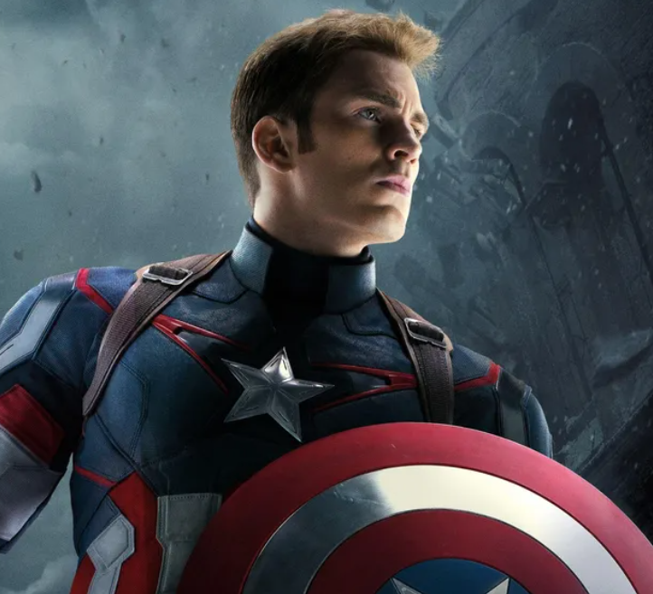
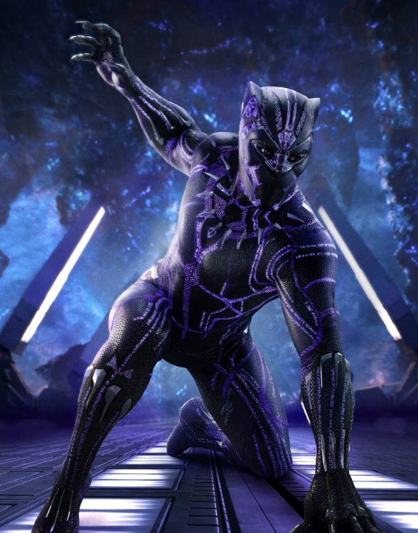
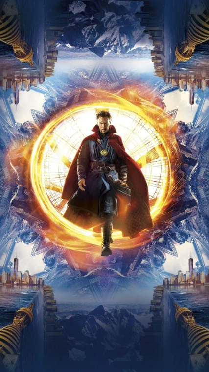
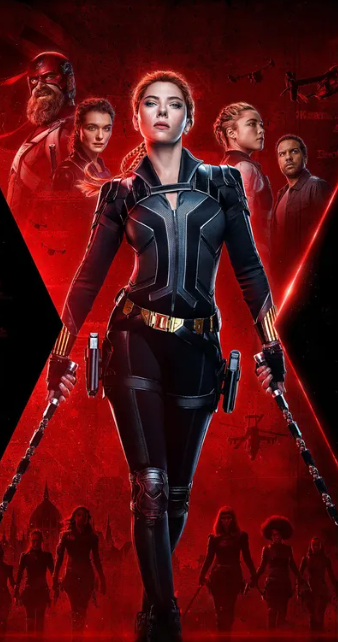
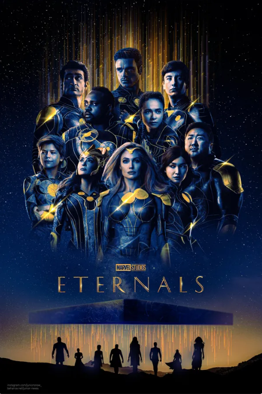
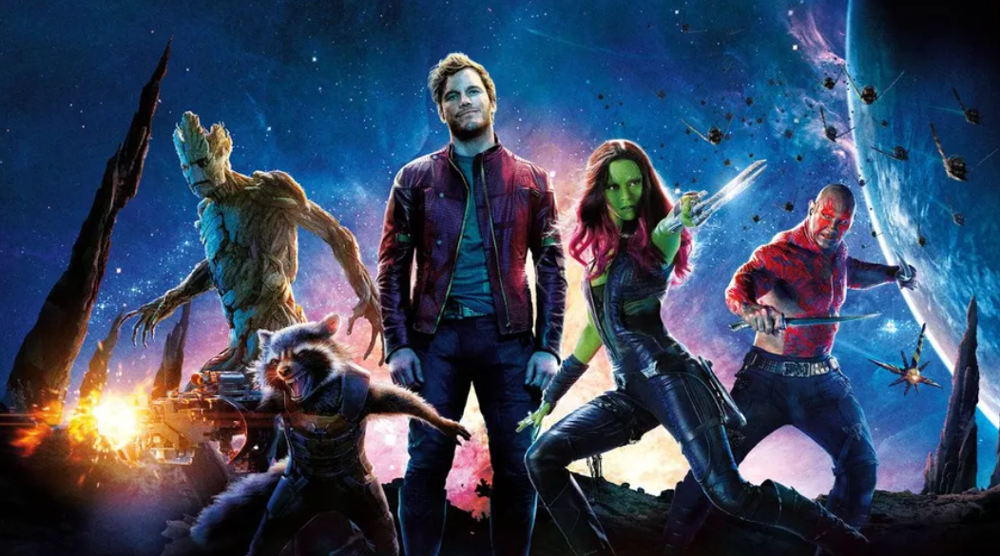
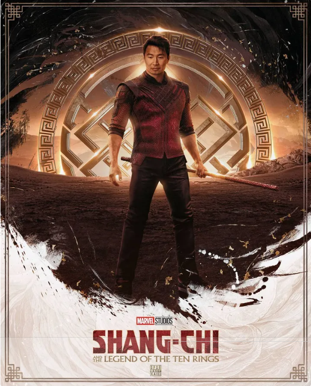
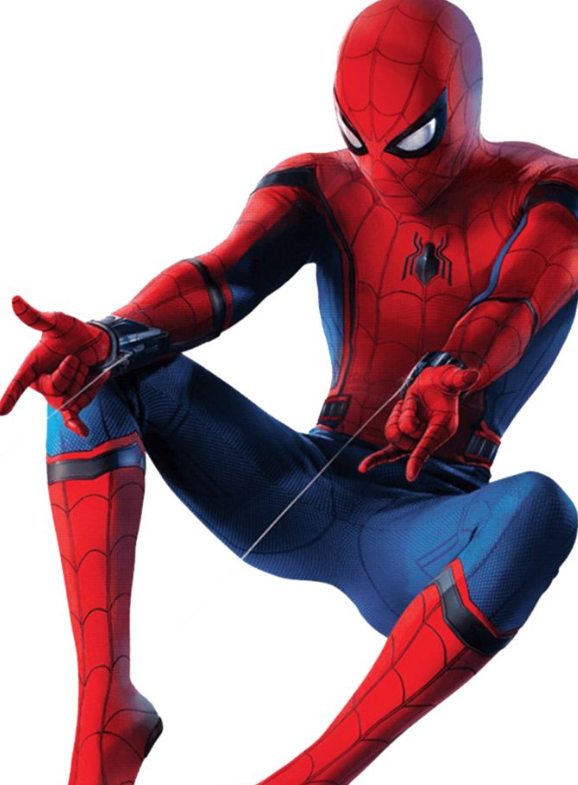
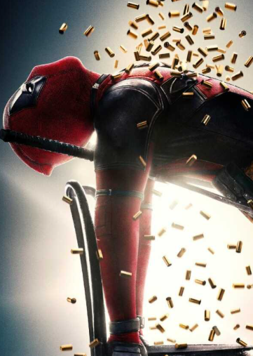

Captain America Movies
Did Chris Evans, who portrays Captain America, initially turn down the role of Steve Rogers multiple times? Not only that but the original design for Captain America's shield was originally intended to be more triangular. The original costume worn by Captain America in the comics was quite different too than the one from the films. It was more patriotic but less practical, with a bright red, white, and blue suit, and a winged mask. The movie version’s design is much more tactical and battle-ready, while still paying homage to the original comics. For a last quick fun fact, did you know the Captain America shield is actually very heavy? Chris Evans admitted that carrying it for long periods of time was rather quite physically challenging.
Thor Movies
Thor made his debut in "Journey into Mystery" #83 (1962), created by writer Stan Lee and artist Jack Kirby. Thor’s iconic hammer, Mjölnir, has a key feature: it can only be lifted by those deemed "worthy." In the comics characters like Captain America, Beta Ray Bill, and even Hulk lift the hammer. An interesting fact about the actor is that Chris Hemsworth originally auditioned for the role of Thor using the line "I am Thor, son of Odin". He even mentioned in a Wired interview that he had an early audition that didn't go well. His younger brother, Liam Hemsworth, also auditioned and almost got the part, but the producers ultimately felt he was too young.

Iron Man Movies
Iron Man first appeared in "Tales of Suspense" #39 (1963), created by Stan Lee, Larry Lieber, Don Heck, and Jack Kirby. The story introduced Tony Stark as a wealthy industrialist who builds a suit of armor to escape captivity in Vietnam (although later retconned to the modern-day conflicts). An interesting fact about his armor is that the Iron Man suits have undergone many upgrades and redesigns over the years. In the early comics, his suit was bulky and gray, but it was eventually redesigned into the iconic gold and red suit we know today. Another big difference from the films and comics is the moment in "Iron Man" (2008) where Tony Stark reveals his identity to the world. This was a bold departure from the comics, where Tony Stark’s identity remained secret for many years.

Ant Man Movies
In the comics, the original Ant-Man was Hank Pym, a scientist who discovered a chemical called "Pym Particles," which allow him to change his size. Hank Pym first appeared in Tales to Astonish #27 in 1962. He also had a brilliant mind and was a founding member of the Avengers. Another cool things about he comics is Ant-Man (Hank Pym) plays an important role in the Civil War storyline. He sides with Iron Man, supporting the registration of superheroes. This was a pivotal moment in the comics, and though the movie adapted a similar storyline, it focused more on Scott Lang's involvement and that he sided with captain america instead.

Avengers Movies
The Avengers movie is the first time Marvel’s biggest heroes came together on screen: Iron Man, Captain America, Thor, Hulk, Black Widow, and Hawkeye. This however was not the orginal line ujp in the old comcis. The Avengers first assembled in Avengers #1 (1963), created by Stan Lee and Jack Kirby. The original team consisted of Iron Man, Thor, Hulk, Ant-Man, and Wasp—Captain America wasn’t introduced until later issues. For later avenger movies many things differed than that of the comics. For example in the comics, Ultron made his first appearance in Avengers #54 (1968), where he was created by Hank Pym. The film adaptation changed his origin, linking him more to Tony Stark’s attempt to create peace.

Hulk Movies
The Hulk first appeared in The Incredible Hulk #1 (1962), created by Stan Lee and Jack Kirby and in the comics, Hulk’s strength is often portrayed as limitless. As for the MCU version of hulk in the 2008 film, Edward Norton played Bruce Banner (Hulk). However, for later appearances in the MCU, the role was recast with Mark Ruffalo. At the time of the 2008 film the CGI used to create the Hulk in this movie was groundbreaking. The character’s size, strength, and movement were carefully designed to look as realistic as possible. .

Black Panther Movies
First appearing in Fantastic Four #52 (1966), T'Challa was Marvel's first Black superhero, and his solo series began in 1977. In the MCU, his debut in Captain America: Civil War (2016) introduced audiences to the culturally rich and technologically advanced nation of Wakanda. Black Panther (2018) broke barriers by showcasing African heritage and became a cultural phenomenon, while Avengers: Infinity War (2018) and Avengers: Endgame (2019) further solidified his role as a global leader. T'Challa's leadership, the powerful Heart-Shaped Herb, and his suit made of vibranium have been key elements in both his comic book and cinematic portrayals. His fierce protector status, paired with a complex foe in Erik Killmonger, highlights themes of legacy, responsibility, and justice. T'Challa's influence continues to inspire, with his legacy forever tied to both Marvel's rich history and its future storytelling.
Doctor Strange Movies
Doctor Strange made his comic book debut in Strange Tales #110 (1963), created by writer Stan Lee and artist Steve Ditko. Dr. Stephen Strange was a brilliant but arrogant surgeon who, after a car accident, turned to the mystic arts to heal himself. In the MCU, he first appeared in Doctor Strange (2016), played by Benedict Cumberbatch, bringing the mystical side of the MCU to life. His powers, gained through his training with the Ancient One, include the ability to manipulate time and reality with the Eye of Agamotto and his signature Cloak of Levitation. Strange has played a pivotal role in the MCU, helping to protect the universe from mystical and cosmic threats in Avengers: Infinity War (2018), Avengers: Endgame (2019), and Spider-Man: No Way Home (2021). His character blends magic, mysticism, and science, exploring themes of humility, sacrifice, and the balance between power and responsibility. Doctor Strange's complex journey from a skeptic to a Sorcerer Supreme has made him an essential figure in both the comics and cinematic universes.
Black Widow
Black Widow made her first appearance in Tales of Suspense #52 (1964), created by Stan Lee, Don Rico, and Don Heck, as a Soviet spy turned superhero. In the comics, Natasha Romanoff starts as an antagonist before later becoming a key member of the Avengers. In the MCU, Natasha was introduced in Iron Man 2 (2010) and played a crucial role in the formation of the Avengers. Her espionage skills, martial arts expertise, and ability to outsmart her opponents made her an indispensable member of the team. Over the years, Black Widow’s character has evolved from a lone agent to a hero who sacrifices everything for the greater good. In Avengers: Endgame (2019), Natasha makes the ultimate sacrifice to obtain the Soul Stone, showcasing her deep commitment to her teammates and the world. Her solo movie, Black Widow (2021), further explores her past and how she became the fierce warrior she is. Natasha’s journey reflects themes of redemption, identity, and the strength to overcome a dark past.
Eternals
The Eternals made their first appearance in The Eternals #1 (1976), created by Jack Kirby. These ancient, god-like beings were created by the Celestials to protect Earth from the Deviants, a race of evil creatures. In the comics, they have a long and complex history, living among humanity but often staying in the background. In the MCU, the Eternals were introduced in Eternals (2021), where they reveal themselves as the protectors of Earth who have secretly guided humanity for thousands of years. Each Eternal possesses unique abilities, such as superhuman strength, flight, and energy manipulation. The film explored themes of responsibility, immortality, and the complexities of their relationships with humanity. The Eternals' connection to the Celestials and their moral dilemmas about interfering in human affairs made them central figures in the MCU, as they face the consequences of their past decisions in the battle against the Deviants and other cosmic threats. Their story emphasizes the importance of unity, sacrifice, and the impact of ancient legacies.
Guardians of the Galaxy
Guardians of the Galaxy first appeared in Marvel Super-Heroes #18 (1969), but the team as we know it today debuted in Guardians of the Galaxy #1 (2008), created by writer Dan Abnett and artist Andy Lanning. The modern Guardians—Star-Lord, Gamora, Drax, Rocket, and Groot—are a group of misfits who come together to protect the galaxy from cosmic threats. In the MCU, they first appeared in Guardians of the Galaxy (2014), where their quirky personalities and unconventional teamwork turned them into fan favorites. The Guardians' adventures blend humor, action, and heart, with a focus on family and redemption. Themes of friendship, loyalty, and the importance of chosen family are central to their story. Their bonds are tested in Guardians of the Galaxy Vol. 2 (2017) and Avengers: Infinity War (2018), where they face emotional challenges and confront the looming threat of Thanos. Their iconic retro soundtrack, humor, and sense of adventure have made them one of the MCU's most beloved teams, proving that even the most unlikely heroes can make a difference in saving the galaxy.
Shang-Chi
Shang-Chi made his first appearance in Special Marvel Edition #15 (1973), created by writer Steve Englehart and artist Jim Starlin. Known as the "Master of Kung Fu," Shang-Chi was raised in secret by his father, the villainous Fu Manchu, before rejecting his father's path and becoming a hero. In the comics, Shang-Chi is a skilled martial artist with incredible agility, reflexes, and strength, often facing both physical and moral challenges. In the MCU, Shang-Chi was introduced in Shang-Chi and the Legend of the Ten Rings (2021), portrayed by Simu Liu. The film explores his origins, his connection to the mysterious Ten Rings organization, and his journey to confront his estranged father, The Mandarin. With his mastery of hand-to-hand combat and his struggle to find balance between his past and present, Shang-Chi's story highlights themes of self-discovery, redemption, and the power of family. His film also introduces a new chapter in the MCU, blending martial arts with mystical elements, and sets the stage for his future role in the larger Marvel Universe.
Spider-Man
Spider-Man first appeared in Amazing Fantasy #15 (1962), created by writer Stan Lee and artist Steve Ditko. Peter Parker, a high school student from Queens, gains spider-like abilities after being bitten by a radioactive spider. His powers include wall-crawling, superhuman strength, and the "spider-sense" that alerts him to danger. Initially motivated by revenge after the death of his Uncle Ben, Peter learns the important lesson that "with great power comes great responsibility," a theme that defines his journey both in the comics and films. In the MCU, Spider-Man is portrayed by Tom Holland, first appearing in Captain America: Civil War (2016). His solo films, including Spider-Man: Homecoming (2017), Spider-Man: Far From Home (2019), and Spider-Man: No Way Home (2021), explore his growth as a hero and the challenges of balancing his superhero life with his personal life. Throughout his journey, Spider-Man faces iconic villains like Green Goblin, Vulture, and Mysterio, while dealing with the impact of his actions on those he loves. His relatable struggles, quick wit, and moral integrity have made him one of the most beloved superheroes in both the comics and the MCU.
Deadpool
Deadpool made his first appearance in New Mutants #98 (1990), created by writer Fabian Nicieza and artist Rob Liefeld. Known for his irreverent humor, breaking the fourth wall, and unpredictable nature, Wade Wilson was originally depicted as a villain before becoming the anti-hero we know today. After being subjected to a government experiment intended to cure his cancer, Wade gains enhanced healing powers but is left horribly scarred. In the comics, Deadpool is often portrayed as a mercenary with a chaotic personality, known for his tendency to talk to the reader and his unique ability to survive almost any situation due to his regenerative healing factor. In the MCU's Deadpool films (2016, 2018), Ryan Reynolds brought the character to life, blending humor, action, and violence in a way that was both unconventional and beloved by fans. Deadpool's films explore themes of revenge, love, and redemption, all while embracing his outlandish behavior and eccentric personality. With his unfiltered humor, violent antics, and complex moral compass, Deadpool stands out as a unique and enduring character in both the comics and film adaptations.
